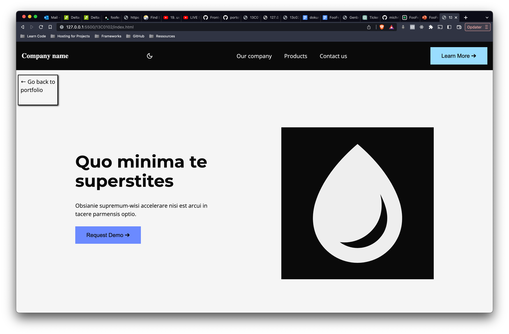

PROJECT 13C0102

Go to page
The project
In this project, we worked with colors, contrast and light/dark mode for users
The solution
Simple colors with a dark mode.
Had issues with the dark mode but implemented in the end
properly.
By adding two extra colors by adding colors of high contrast.
Again, lots of contrast so everything stands out from each other.